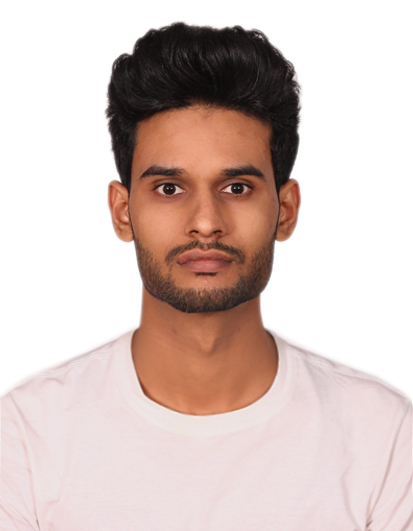

RESUME

CAREER OBJECTIVE
- I am seeking opportunities where I can utilise my existing knowledge for the betterment of the organisation as well as learn new skills, enhance my potential, and flourish professionally.
EDUCATIONAL QUALIFICATIONS
- B.Tech in Electrical Engineering from UIET, Maharshi Dayanand University, Rohtak with 67.05% - (2015-2019) batch.
- 10+2 with an aggregate of 79.4%.
- 10th with an aggregate of 8.8 CGPA.
SKILLS
Hard Skills
- Web Development using HTML, CSS & JavaScript & Effectively diagnosed and resolved technical issues, ensuring smooth operation of web applications
Soft Skills
- Problem Solving
- Leadership
- Team Collaboration
- Project Management
EXTRA CURRICULAR ACTIVITIES
- Volunteer in National Youth Festival 2017 held in MDU, Rohtak
- Participated in a University level Cricket tournament in 2016
- Participated in ADVENT camp organised by IHTM
- Rank 63 in International Master Mathematics Olympiad 2011
PERSONAL PROFILE
- NAME : RAVINDER YADAV
- DATE OF BIRTH : 16/03/1997
- SEX : MALE
- LANGUAGES KNOWN : ENGLISH, HINDI
- HOBBIES : BADMINTON, READING BOOKS
DECLERATION
- I hereby declare that the information provided here is correct up to my knowledge and I bear the responsibility for the correctness of the above- mentioned particulars.
Contact Me